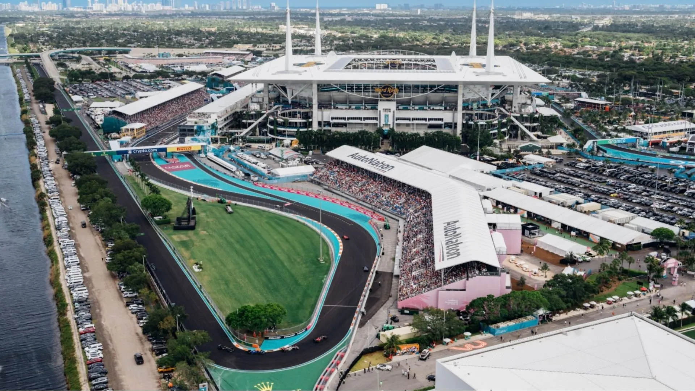
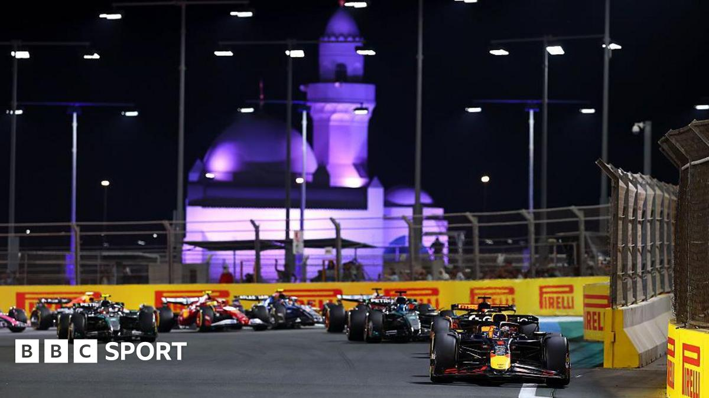

News
Read the latest and most important news that revolves around the world of Formula 1. Whether it's on the track or rumours in the paddock, we've got you covered and in the loop!
Top stories

News
F1’s 2026 Rule Reset: The Technical Changes Arriving at the Miami Grand Prix
Formula 1’s bold 2026 technical era was always expected to demand adjustment. After just three race weekends, that adjustment has already arrived. Ahead of the 2026 Miami Grand Prix, the FIA, Formula 1, team principals and power-unit manufacturers agreed a package of regulation refinements aimed at making the new cars safer, more predictable and more consistently “flat-out” to drive. The changes are set to apply from Miami onwards, with race-start procedures being tested there before wider adoption.

News
Bahrain and Saudi Arabia GP Cancelled
Amid the ongoing dispute and rising tensions in the Middle East, the FIA have confirmed that the 4th and 5th rounds of this year's world championship will not take place. Williams driver and Director of the Grand Prix Drivers' Association (GPDA) Carlos Sainz stated on social media: “I truly hope that this conflict comes to an end as soon as possible and that everyone stays safe. Racing in the Middle East is always special and I hope we can return to the region as soon as circumstances allow.”